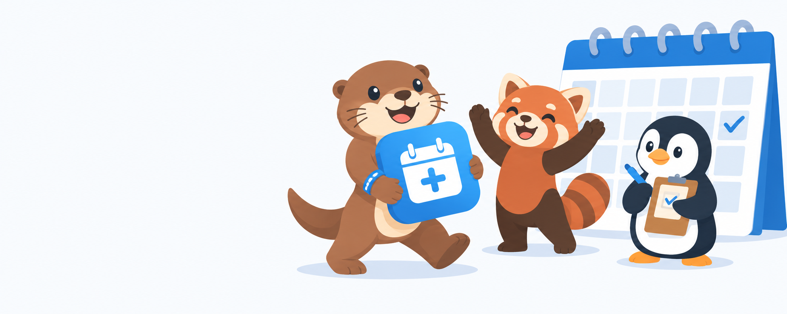

AnyCal+ is a Salesforce AppExchange app that turns related records into calendar events on any record page. This brief defines the visual system we reuse across every product we ship: a shared icon tile, a palette, two typefaces and a mascot family. Follow it exactly for colors and the icon; use your judgment inside the illustration style rules.
Brand blue is reserved for the icon tile, buttons and UI. Illustrations use the full set, with warm amber and the mascot fur tones to keep scenes from feeling monochrome. Use flat fills; one shade tone per color for shadows (darken ~12%, no black).
#0B6FCC#2E9BF0#F2A33A#1B2332#5A6577#F0F3F7#FAFBFCEvery product shares the same tile: a rounded square (corner radius 22% of width), Brand Blue → Sky Blue gradient at 135°, and a single white glyph. The glyph is the only thing that changes between products. For AnyCal+ the glyph is a calendar with the “+” cut out of its body in the tile gradient. Never add outlines, inner shadows or extra colors to the tile.
icon.svg; do not redraw it by hand.Our own characters, in our own world. One hero per product (the otter belongs to AnyCal+), plus two helpers who appear across all products. Big heads (about 40% of total height), small rounded bodies, simple dot eyes with a single highlight, small mouths, no outlines, flat fills with one shadow tone per color.
Warm brown fur, cream muzzle and belly, round ears, long tail. Organized and upbeat: always holding, carrying or arranging something. Wears a small Brand Blue lanyard or wristband as the only prop.
Rust fur, cream face markings, dark limbs, ringed tail. Curious and enthusiastic; the one who points, cheers and asks questions. Amber accents on the ear tips.
Ink body, white front, amber beak and feet. Calm and precise; the planner who checks the schedule. Often shown with a clipboard or at a laptop.
#F8FAFD with no gradient or vignette, and nothing touching the image edges. Image models output fixed ratios, so we extend the canvas to the final size afterwards; a clean background makes that invisible.
#00A1E0, #0176D3) anywhere.icon.svg in scenes as-is.AppExchange sizes come from the Salesforce packaging guide and should be confirmed in the Partner Console before final export. PNG unless noted; transparent background where the use is “logo”.
| # | Asset | Size | Use | Source |
|---|---|---|---|---|
| 1 | Small logo | 60 × 60, ≤100 KB | AppExchange listing | icon.svg |
| 2 | Tile logo | 280 × 205, ≤300 KB | AppExchange listing tile | icon + wordmark, centered |
| 3 | High-res logo | 2048 × 2048, transparent | AppExchange marketing | icon.svg |
| 4 | Listing banner | 1200 × 300 | AppExchange listing header | Scene A |
| 5 | Screenshots ×6 | 1920 × 1080 | AppExchange gallery | Product captures, framed |
| 6 | Favicon set | SVG + 32, 180, 512 | Support site | icon.svg (done) |
| 7 | Social / OG image | 1200 × 630 | Link previews | Scene C |
| 8 | Site hero | 1600 × 900 | Support site header | Scene B |
| 9 | Empty-state spot | 800 × 600 | In-app “no events” state | Scene D |
| 10 | Limit-reached spot | 800 × 600 | In-app configuration limit screen, Editions section | Scene E |
| 10 | Character sheet | 3000 × 2000 | Brand kit, future products | Front, ¾, side; 3 expressions; 3 poses each |
Otto carries the AnyCal+ icon tile like a prized package toward a large wall calendar. Pim cheers from the right with both arms up; Penny holds a clipboard and ticks a box. Wide composition, characters in the right two-thirds, calm negative space on the left for listing text overlay.
The trio installs the icon tile into an empty slot on a big calendar grid mounted on the wall, like fitting the last piece. Otto on a short stool pushing it into place, Pim steadying the ladder, Penny checking a planner. Sticky notes and a plant in the scene.
Otto alone, presenting the icon tile with an open palm, half-turned to the viewer, confident smile. Simple Paper background with a faint calendar grid. Room on the right for a headline.
Penny sitting cross-legged looking at a blank calendar page, relaxed, a cup beside her. Light, friendly, no sadness: “nothing scheduled yet.”
Two wall calendars. The left one already has the tile fitted; Pim holds a second tile in front of the right one, which has a small amber padlock. Otto gives a thumbs up. Upbeat: “easy, we can unlock that.” Used on the Free edition limit screen and the Editions section.
Workflow that keeps generations to a minimum: attach banner-master.png (style reference) and png/icon-1024.png (the exact tile) to the chat, paste the base prompt, the characters prompt and one scene prompt together, and generate in landscape. Don't ask the model for an exact pixel size; keep the background uniform and the edges clear, and we extend the canvas to the final ratio afterwards. If a result is right except for one detail, use the model's edit mode on that image rather than regenerating.
Soft flat illustration, no outlines, clean rounded shapes, gentle tonal shading with light from the top left, matching the attached reference banner. Plain uniform background #F8FAFD with no gradient or vignette; nothing touches the image edges. Limited palette: brand blue #0B6FCC, sky blue #2E9BF0, amber #F2A33A, ink #1B2332, slate #5A6577, mist #F0F3F7, paper #FAFBFC. Bright modern workspace with calendar motifs (wall calendar grid, sticky notes, planner, clock, a plant). Friendly cartoon animal characters with large round heads (about 40% of height), small rounded bodies, simple dot eyes with one highlight, small mouths. No text, no gradients on characters, no 3D, no glow, no photographic texture, white or paper background.
Characters: Otto, a cheerful otter with warm brown fur #8C5A3C, cream muzzle and belly #F3E3C9, round ears, long tail, wearing a small blue #0B6FCC wristband. Pim, an enthusiastic red panda with rust fur #C9552B, cream face markings, dark limbs #3A2A22, ringed tail, amber #F2A33A ear tips. Penny, a calm penguin with ink body #1B2332, white front, amber #F2A33A beak and feet, holding a clipboard. The app icon is a rounded square tile with a blue gradient (#0B6FCC to #2E9BF0) and a white calendar glyph with a plus sign cut into it; the tile is a flat solid object the characters can carry.
Wide 4:1 banner. Otto carries the app icon tile with both arms like a prized package, walking toward a large wall calendar on the right. Pim cheers with both arms raised. Penny ticks a box on her clipboard. Characters occupy the right two-thirds; the left third is calm empty paper background for text overlay.
16:9 scene. The three characters install the app icon tile into an empty slot in a big wall-mounted calendar grid, like fitting the last puzzle piece. Otto stands on a short stool pushing the tile into place, Pim steadies a small ladder, Penny checks a planner. Sticky notes on the wall, a plant on the floor, plenty of negative space above.
1.9:1 composition. Otto alone on the left, half-turned to the viewer, presenting the app icon tile on an open palm with a confident smile. Paper background with a faint light-grey calendar grid pattern. The right half is empty for a headline.
4:3 spot illustration. Penny the penguin sits cross-legged on the floor looking at a blank wall calendar page, relaxed and content, a cup of tea beside her. Minimal background, mostly paper white, small sticky note on the wall. Mood: nothing scheduled yet, calm and friendly.
4:3 spot illustration. Two wall calendars side by side. The left calendar already has the app icon tile fitted into it. Pim the red panda stands in front of the right calendar holding a second app icon tile, looking up at it hopefully; the right calendar has a small amber #F2A33A padlock hanging on its corner. Otto the otter beside Pim gives a cheerful thumbs up, as if to say "easy, we can unlock that". Mood: upbeat and encouraging, not a refusal. Minimal background, mostly paper white, a plant on the floor.
Edit this image. Keep everything exactly as it is: the characters, poses, expressions, colors, background and composition. Only change the app icon tile the otter is holding so its glyph matches the attached icon image exactly: a white calendar shape with two small white binder rings at the top, a thin horizontal band of the tile blue across the top of the calendar, and a bold plus sign in the same blue as the tile (#0B6FCC) inside the white calendar body. The plus must not look like a medical or first-aid cross: no red, no white cross on a colored square. Keep the tile's rounded corners and blue gradient (#0B6FCC to #2E9BF0).
outlines, line art, text, letters, logos, watermark, gradients on characters, 3D render, photorealistic, glossy, glow, neon, campfire, ranger hat, badges, mountains, raccoon, bear, goat, fox, owl, wolf, elephant, zebra, moose, dog, Salesforce
anycal-{asset}-{w}x{h}.svg.anycal-{asset}-{w}x{h}.png, sRGB, transparent where noted.icon.svg, logo-horizontal.svg, logo-stacked.svg, png/.